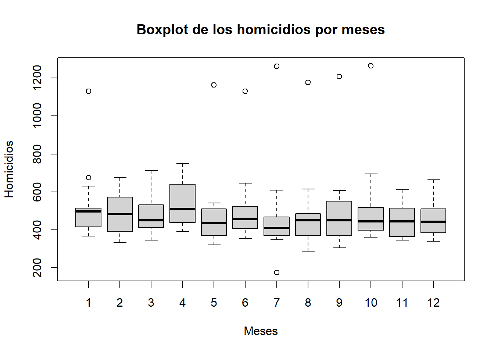
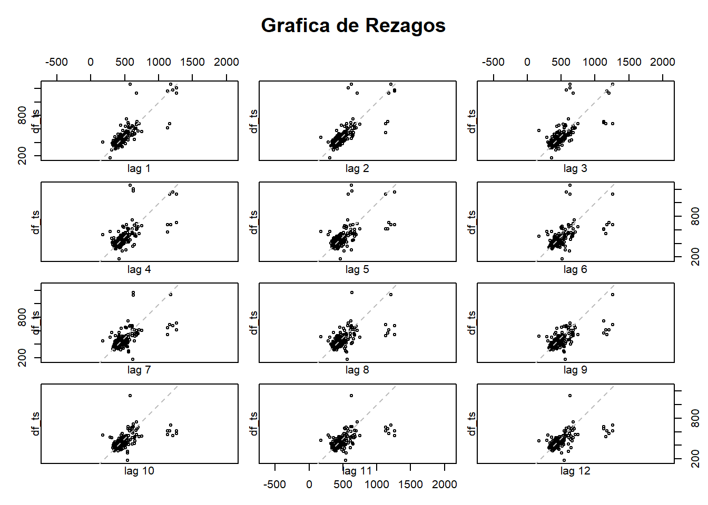
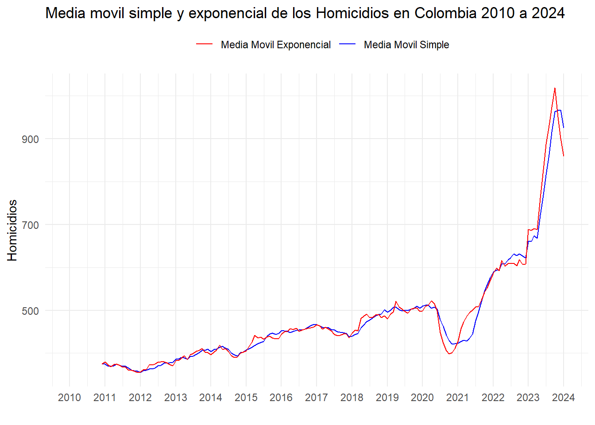
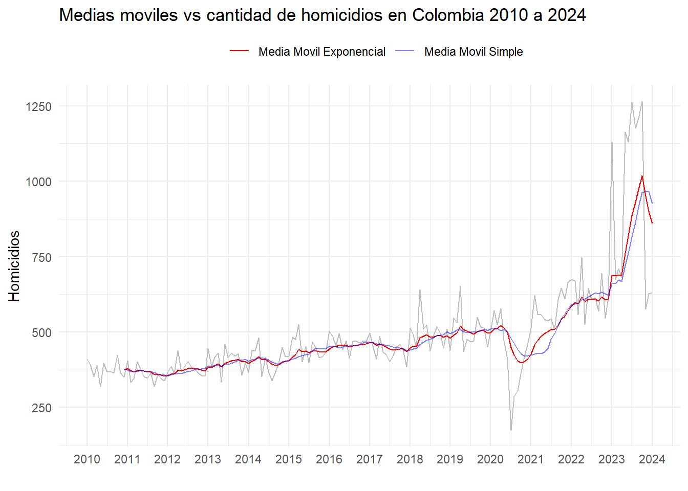
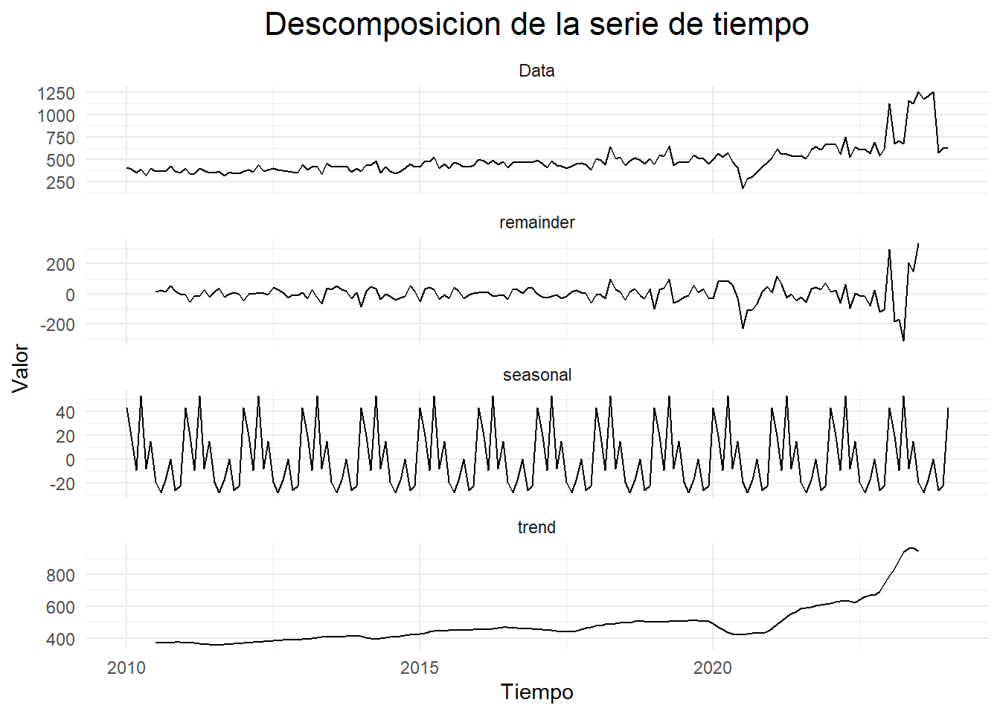
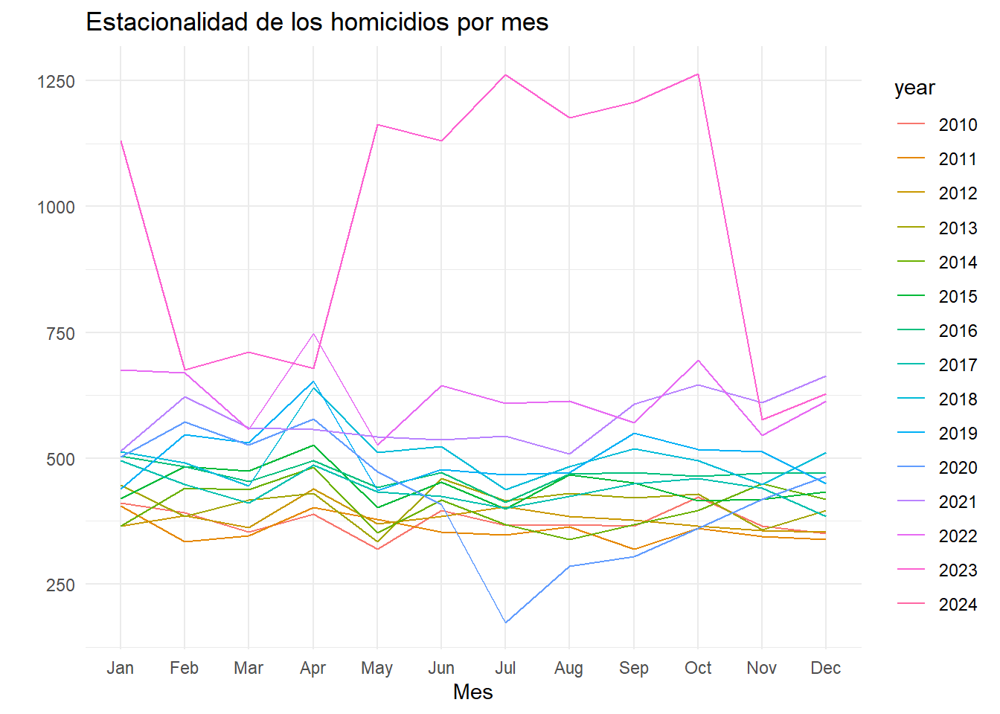

chapter3 - Creacion y Exproracion de Serie de Tiempo
A continuacion se realiza la transformacion de nuestro dataset al formato se serie de tiempo esto con el objetivo de aplicar las tecnicas de exploracion y prediccion adecuadas para este tipo de informacion temporal.
Iniciaremos presentando un resumen de los estadisticos de los homicidios totales de la serie de tiempo luego de realizar la transformacion de los datos:
## Min. 1st Qu. Median Mean 3rd Qu. Max.
## 174.0 397.0 449.0 491.5 526.0 1264.0Dado a que es una serie de tiempo solo tendremos en cuenta la construcción de una base que contenga las variables FECHA HECHO y CANTIDAD para el analisis a realizar, de igualmanera se determinan los siguientes parametros:
- Frecuencia de la serie: Anual
- Inicio de la Serie: 2010, 1
- Fin de la Serie: 2024, 1
adicionalmente se resaliza la verificacion de la clase de la serie de tiempo:
- Calse de la serie: ts
3.0.1 - Visualizacion de TS
En el grafico anterior se observa que la seria presenta una leve tendencia de 2010 a 2020, a ´partir de este punto se evidencia un notable cambio debido a la aparicion de la pandemia y el confinamiento que sufrio la poblacion a partir del año 2021 se observa que el comportamiento de homicidios en colombia adquiere un incremento mas marcado con una tendencia casi exponencial, este comportamiento podria deberse a los cambios a nivel de estrategias de seguridad implementadas con el nuevo gobierno.
3.0.2 - Analisis por Ciclos
Se realiza la evaluacion de la serie agrupada por meses para determinar patrones de comportamiento durante cada uno de ellos, este analisis permite evidenciar estacionalidades que no son tan claras viendo la serie de tiempo cruda.

Luego de analizar los resultados se evidencia que en el mes de abril hay mayor numero de homicidios, adicionalmente se evidencia que la media de los meses se encuentra entre los 400 y 500 homicidios.
En 7 meses se observan unos valores atipicos que superan los 1000 homicidios y uno en el que se presentaron menos de 200, seria de gran valor hacer un analisis detallado de estos datos con el objetivo de entender mejor la naturaleza de estos resultados.
3.0.3 - *Identificacion de estacionalidades en los resagos

Para el caso de la grafica de rezagos se puede afirmar que existe estacionalidad en la serie de tiempo, debido a que se reflejan patrones identificables en los datos.
3.0.4 - Media Movil
A continuacion se realiza el calculo de las medias moviles (SMA y EMA) de la serie de tiempo con el objetivo de obtener de forma mas clara el comportamiento de nuestra serie e identificar cual de estas se ajusta en mejor proporcion a nuestra serie.

Durante los últimos 13 años, los homicidios en Colombia han experimentado un aumento gradual. Las medias móviles de 12 meses muestran que en 2010 había entre 230 y 240 asesinatos, comparados con 1000 a 850 asesinatos en los últimos meses de 2023 y enero de 2024, quintuplicando así las cifras de este fenómeno en el país. Se observa una tendencia a la baja al finalizar el primer semestre de cada año, seguido por un aumento durante los últimos meses, adicionalmente, se identifican dos períodos de fluctuaciones significativas:
Una baja notable al comienzo de la pandemia en 2020, dada la crisis sanitaria provocada por el COVID y la política de aislamiento social
Un aumento sostenido en casi todo 2023, este comportamiento podria estar asociados a aumentos de bandas criminales y grupos armados como efecto de los cambios politicos que se generaron con el actual gobierno en materia de seguridad.
En cuanto a las líneas móviles exponenciales versus las simples, aunque no coinciden exactamente en su posición, sí lo hacen en cuanto a su tendencia, siendo la línea simple más suavizada que la exponencial.

En congruencia con las medias móviles, se observa que la cantidad de homicidios no supera los 375 casos mensuales mensuales antes del 2020, sin embargo en el los periodos posteriores como en el 2023 se observa que se alcanzan valores tope hasta de 1000 muertes mesuales en el país a causa de los homicidios.
3.0.5 - Componentes de las Series Temporales
A continuacion realizaremos algunas exploraciones que nos permitiran detallar mucho mejor el analisis de nuestra serie de tiempo, mediante estas herramientas podremos identificar los componentes basicos de una serie temporal y determinar las transformaciones necesarias para mejorar ciertos comportamientos para el analisis.

En el grafico se identifica:
1- El comportamiento de la serie - El comportamiento de los residuales de la serie - El comportamiento de la estacionalidad - El comportamiento de la tendencia
Al observar el comportamiento de los residuos se puede establecer que la serie es Estacionaria esto debido a que los valores tienen un comportamiento estable al rededor de Cero sin variaciones significativas en la mayor parte de la serie, adicionalmente se identifica que la serie tiene un patron estacional año a año y finalmente la tendencia presenta un comportamiento lineal de los homicidios durante los años 2010 y 2020, Posteriormente, se vuelve creciente hasta finales del 2023.
3.0.6 - Identificación de Estacionaridad Dicker - Fuller
La prueba Dicker - Fuller nos permite a traves de valores estadisticos determinar si la serie es estacionaria o no, esta prueba se basa en desechar o aprobar la Hipotesis Alternativa a través del estadistico P-Value, donde Hipotesis Alternativa: Es Estacionaria.
##
## Augmented Dickey-Fuller Test
##
## data: Data_ts$homicidios
## Dickey-Fuller = -4.1312, Lag order = 5, p-value = 0.01
## alternative hypothesis: stationaryDado que el p-value obtenido fue 0.01, valor que es inferior al nivel de significancia de 0.05 se acepta la hipotesis alternativa de que la serie Sí es estacionaria.
3.0.7 - Estacionalidad por año
La estacionalidad en una serie de tiempo nos permite identificar patrones que nos permiten identificar patrones que se repiten con una frecuencia especifica, esta informacion es clave para tomar acciones sobre comportamientos que pueden estar asociados a comportamientos de la poblacion influenciado por factores externos (vacaciones, temporada de lluvia, navidad, etc.).

Se evidencian picos en la mayoría de los años principalmente en los meses de febrero, abril, junio y octubre, a excepción de 2023 donde se observa un comportamiento atipico en Enero mas alto de lo usual y entre Mayo y Octubre estos valores vuelven a incrementar de forma significativa y con una tendencia incremental en ese periodo.